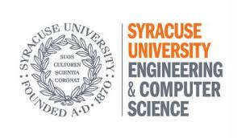
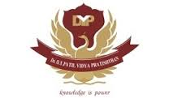

Devashree Jadhav
Computer Science Graduate Student
at Syracuse University
- 314-949-8811
- devashree.d.jadhav@gmail.com
- LinkedIn profile
Skills
Language and Technologies :
JAVA, C++, C#, HTML, CSS, JavaScript, ASP.Net, Python, jQuery, Rest API service
Tools and Relational Database Management Systems:
Visual Studio 2015, Eclipse IDE, Selenium Web driver, Appium, SQL Server, MySQL, Maven, Log4, JUnit
Work Experience
Decide4Action
Develop web applications for process management in manufacturing plants.
Develp mobile applications for scanning items for verification
Develop APIs to use Stored procedures from database in the manipulation of frontend
Mindstix Software Labs [Pune, India]
Designed web applications using HTML, CSS, JavaScript and C# in ASP.Net.
Utilized knowledge of SQL Server 2008/2012 for managing databases.
Utilized knowledge of Java for designing automated test case
using Selenium Web driver and Appium on mobile and web apps.

Infosys Ltd. [Pune, India]
System Engineer | July 2014 – November 2015
Utilized knowledge of SQL for managing databases
Designed websites using C#, ASP.Net according to technical specifications.
Maintained and updated software specification documents.
Worked in a ‘request’ based environment where updates were made to the
project according to client specifications.
System Engineer | July 2014 – November 2015
Utilized knowledge of SQL for managing databases
Designed websites using C#, ASP.Net according to technical specifications.
Maintained and updated software specification documents.
Worked in a ‘request’ based environment where updates were made to the
project according to client specifications.
Education

Syracuse University
Syracuse University
Pursuing Masters in Computer Science | August 2016 – May 2018

D.Y.Patil Institute of Engineering and Technology
(University of Pune)D.Y.Patil Institute of Engineering and Technology
Bachelor of Engineering (Computer) | August 2010 – May 2014
Core Courses
- Design and analysis of Algorithms
- Computer Architecture
- Object oriented design
- Internet Programming
- Structured programming and formal methods
- Database Management Systems
- Advanced databases
- System Programming and operating systems
- Software Engineering
- Principles of programming language
- Theory of Computation
- Computer Networks
Projects
Adaptive Clustering Methodology for Evolving Data Streams
This project is being implemented to ensure efficient Clustering of Continuous and Massive Data Streams. It included performing clustering on electrical datasets of various zones of areas over 10 years, used the clustered datasets for analyzing the trend of usage of electricity in various times of the year, and used the datasets for analyzing the trend of usage of electricity in the given zones.
Banking Application
This project was implemented in C++ and database was managed in file systems. It had two parts in accessibility from admin end and from user end providing all the basic functionalities.
Code Analyzer
Created a type table of specific tokens using a code analyzer and implemented a dependency table mapping the various files depending on each other using this type table. The code analyzer would be executed on various folders of .cpp and .h files to extract method names to show dependencies using C++.
Code Publisher
Published code on the browser through HTML files. The copying of content from source (.cpp or .h) file to HTML file was performed through code. This project also gives the user the flexibility of collapsing code in various scopes. This project used the integration of CSS, JavaScript and HTML with C++.
Error logger of Websites
Created a website using Asp.Net MVC framework and associated the same with a database using Entity framework. This Website displays the logged errors to user owning the application. The Website is created for user and Admin ends. Designed rest service to store data coming from the applications and then pushed the data from rest service into a Database.
This project is being implemented to ensure efficient Clustering of Continuous and Massive Data Streams. It included performing clustering on electrical datasets of various zones of areas over 10 years, used the clustered datasets for analyzing the trend of usage of electricity in various times of the year, and used the datasets for analyzing the trend of usage of electricity in the given zones.
Banking Application
This project was implemented in C++ and database was managed in file systems. It had two parts in accessibility from admin end and from user end providing all the basic functionalities.
Code Analyzer
Created a type table of specific tokens using a code analyzer and implemented a dependency table mapping the various files depending on each other using this type table. The code analyzer would be executed on various folders of .cpp and .h files to extract method names to show dependencies using C++.
Code Publisher
Published code on the browser through HTML files. The copying of content from source (.cpp or .h) file to HTML file was performed through code. This project also gives the user the flexibility of collapsing code in various scopes. This project used the integration of CSS, JavaScript and HTML with C++.
Error logger of Websites
Created a website using Asp.Net MVC framework and associated the same with a database using Entity framework. This Website displays the logged errors to user owning the application. The Website is created for user and Admin ends. Designed rest service to store data coming from the applications and then pushed the data from rest service into a Database.